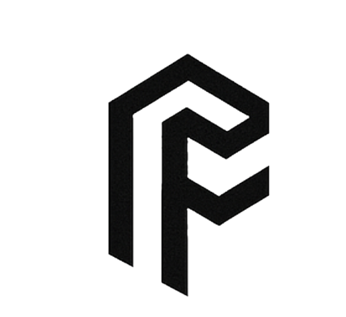

Impossible FibersHow: we're building nature's manufacturing strategies into tools, starting with encapsulated dopes
See them in spiders, mussels and velvet worms →We build encapsulated dopes, made in our stainless-steel microfluidic chips.
We're researching microfluidic sorting that sets the order of the droplets.
We're researching triggering at the right place and time.
We spin by contact pulling, electrospinning and microfluidic spinning.
R&D projects on protein fibers, with funders and partners.
We publish our tools, methods and data in four areas.
Researchers, industrial teams and funders: tell us what you're working on.
info@impossiblefibers.com